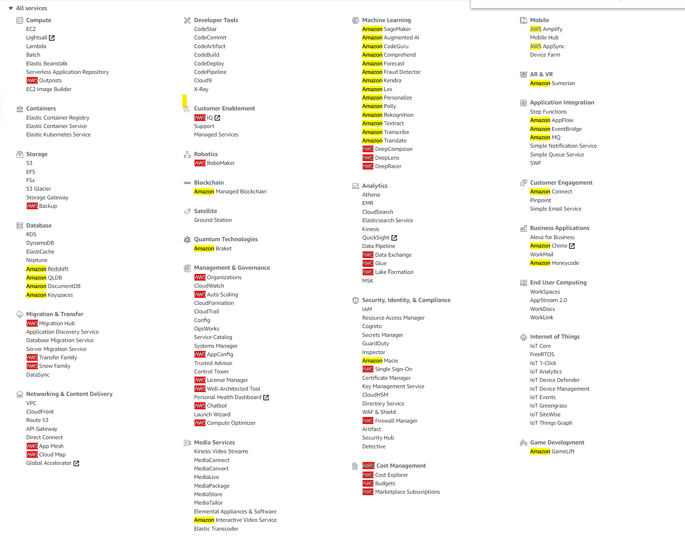
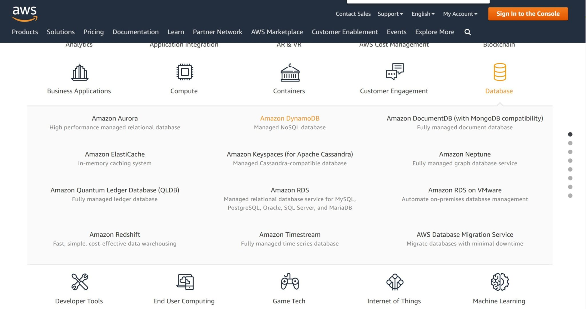

This was first published on https://www.dbi-services.com/blog/amazon-or-aws-services/ (2020-09-18)
Republishing here for new followers. The content is related to the versions available at the publication date.
. 
When I’m writing about a product I like to be precise about the name, the upper and lower case, and even more: do you know that was taking special care of writing Oracle 12cR2 before then non-italic came with 18c? And that’s also the reason I’m not writing a lot about VMware as it takes me 5 minutes to put the uppercase right 😀
You may have seen that many Amazon cloud services in AWS start with “Amazon” and other start with “AWS”. I was mentioning DynamoDB recently and got a discussion with Craig, community manager behind @DynamoDB, about when services start with “AWS” and when they start with “amazon”.
First, the “service” menu in your AWS console may not give the answer you expect:
Yes, for sure an alphabetical list of services starting with “AWS” or “Amazon” may not be very useful. Here DynamoDB is at letter “D” but the page https://aws.amazon.com/dynamodb/ says “Amazon DynamoDB”.
The source of truth is the https://aws.amazon.com/ and here all database service start with “Amazon” except DMS, the “AWS Database Migration Service”: 
Now is there any rule for that?
The StackOverfow https://stackoverflow.com/questions/46069047/aws-products-and-services-naming-nomenclature-starting-with-amazon-vs-aws most voted answer brings the idea that standalone services start with “Amazon” where utility services start with “AWS”. Yes, databases like Amazon DynamoDB or Amazon Relational Data Service (RDS) are standalone services but AWS Data Migration Service is a utility. This explanation is right most of the time. You backup the “Amazon” services with “AWS Backup”. You deploy to “Amazon EC2” (Elastic Compute Cloud) with “AWS” services.
Think about it: the services that are used by Amazon itself and provided to Amazon customers start with “Amazon” and run in Amazon Web Services (AWS) – Cloud Computing Services. And to manage them you have additional “AWS” services available. The StackOverflow thread has other hypothesis like “AWS” being for PaaS and “Amazon” for IaaS. But that doesn’t work: Amazon EC2 is IaaS, Amazon RDS is PaaS.
In summary, the simple rule is: the services exposed to the users start with “Amazon” except when they are used to administrate, move data, or add some logic to those services. Those utiliy services start with “AWS”. An in doubt, the AWS homepage is the source of truth.
{kind=link}
{kind=link}